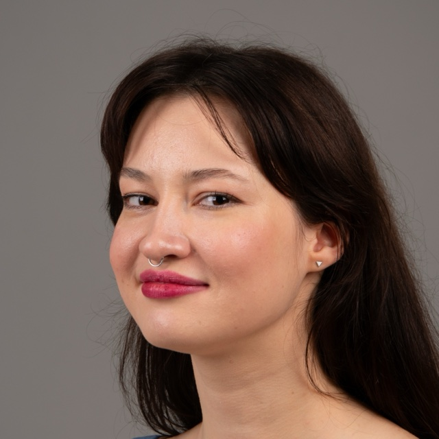

Диана Белоконь
Продуктовый маркетолог
О себе
Продуктовый маркетолог с опытом в технически сложных IT-решениях. Умею объяснять сложный продукт простым языком для разных сегментов аудитории. Веду go-to-market под ключ: от исследования аудитории и позиционирования до запуска, роста метрик по всей воронке и оценки бизнес-результата. Опираюсь на JTBD-интервью, CJM, продуктовую аналитику и эксперименты, а выводы превращаю в конкретные изменения продукта и коммуникаций.
Опыт работы · 9 лет 8 месяцев
Рег.облако
Product marketing manager · июн. 2025 — мар. 2026
Продуктовый маркетинг портфеля облачных сервисов (IaaS, PaaS, SaaS): серверы, Managed Kubernetes, DBaaS, S3, Cloud GPU, решения для ML/AI.
- Вела go-to-market под ключ для 6 новых продуктов (Terraform, сетевые диски, ИИ-ассистент, виртуальные роутеры, JupiterHub, образы с n8n и Portainer): лендинги, публикации на Хабре, рассылки, анонсы в соцсетях, контекстная реклама.
- Клиентская база выросла на 23%.
- Увеличила выручку направления на 55% за счёт релизов, акций, конференций, SEO-трафика и кейсов.
- Повысила конверсию трафика в заявку на 15%: выпустила и обновила 10+ лендингов, добавила промоблоки с акциями и онлайн-чат.
- Запустила вебинары как новый канал лидогенерации: от выбора темы и спикеров до анализа каналов привлечения, опроса участников и оценки продаж после эфира.
- Запустила рассылки с промокодами и коммуникации по ценовым инициативам.
- Участвовала в планировании Demo Day 2026: цели, аудитория, каналы привлечения, лендинг, Telegram-бот для сбора контактов.
NETRIKA
Product marketing manager · окт. 2023 — фев. 2025
- Выстроила discovery: сегментация аудитории, интервью, сценарии использования, анализ обратной связи. На этой основе разработала позиционирование, ценностные предложения и сообщения для разных сегментов.
- Проверила каналы привлечения (выставки, прямые продажи, рекомендации, партнёрства) и выбрала самый результативный: продажи через интеграторов и дистрибьюторов. Сформировала пайплайн на 60 млн ₽, увеличила число пилотных проектов.
- Увеличила лидогенерацию в 2,5 раза, проработав сценарии взаимодействия с участниками отраслевых конференций.
- Планировала и проводила конференции, PR, контентные проекты, email-маркетинг.
Атлассофт
Product Manager · апр. 2021 — фев. 2023
Портфель приложений для Jira на глобальном рынке: продуктовый план, бэклог, клиентский опыт.
- Увеличила прибыль на 48% год к году: рост конверсии в триал и оплату, рост среднего чека, продуктовая аналитика.
- Подняла конверсию в триал на 6 п.п. экспериментами на страницах приложений, а конверсию из триала в оплату — с 12% до 19% через онбординг и доработки приложений.
- Увеличила средний чек в 2,5 раза, пересмотрев тарифы нескольких приложений.
- Провела 40 JTBD-интервью и на их основе сфокусировала продукт на поставке ценности; настроила непрерывный сбор обратной связи.
- Внедрила Amplitude для оценки результатов релизов и приоритизации бэклога; проанализировала конверсии по этапам, удержание и MRR, нашла точки роста.
- Формировала продуктовое видение и долгосрочный план, приоритизировала бэклог по RICE, разрабатывала CJM, пользовательские сценарии и истории.
Webim
Product marketing manager · Middle · авг. 2020 — апр. 2021
Платформа онлайн-консультирования: чат для сайта и приложений, интеграции с мессенджерами, чат-боты.
- Построила дерево метрик и проанализировала воронку: нашла этапы с потерями конверсии.
- Повысила конверсию регистрации на 40% экспериментами, а конверсию в оплату на 6%, оптимизировав пользовательский путь.
- Сократила стоимость привлечения клиента из контекстной рекламы в 2,5 раза, из Facebook — на 30%.
Ранее
- Digital Flow Agency, руководитель отдела маркетинга (2018–2020): маркетинговые стратегии для Medtech, Education и E-commerce, ROMI 170–480%.
- i'way, маркетолог (2018–2019): рост прибыли на 45% год к году в регионах.
- МКК «Ваш инвестор», маркетолог (2017–2018): новый сайт дал рост конверсии в заявку на 60%.
- СИБАВТО, маркетолог (2015–2017): продвижение бренда Lifan.
Навыки
Образование и курсы
- 2015
- Новосибирский государственный технический университет, реклама и связи с общественностью
- 2022
- Авито, «Продукт и точка»
- 2021
- GoPractice, симулятор работы в продуктовой компании
- 2019
- СПбГТИ, «Цифровой маркетинг и социальные сети»